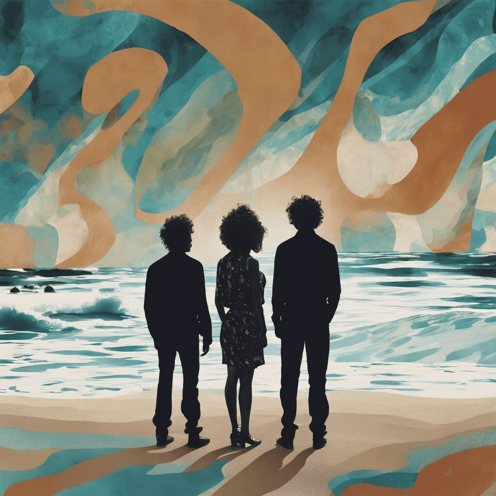

¡Escuchá nuestro primer single "Frente Al Mar"!


Nosotros somos Andrómeda!, una banda de rock y pop local de Aldo Bonzi, La Matanza. La banda esta formada actualmente por tres integrantes: Eros Osso, Guillermina Rieznik y Franco Catalogni.

Eros Osso es el guitarrista de la banda. También es quien graba y produce las canciones que sacamos.
Guillermina Rieznik es la voz principal de Andrómeda. También toca la guitarra como acompañamiento y la armónica en algunas canciones.
Franco Catalogni es el bajista. También es corista en algunas de las canciones.